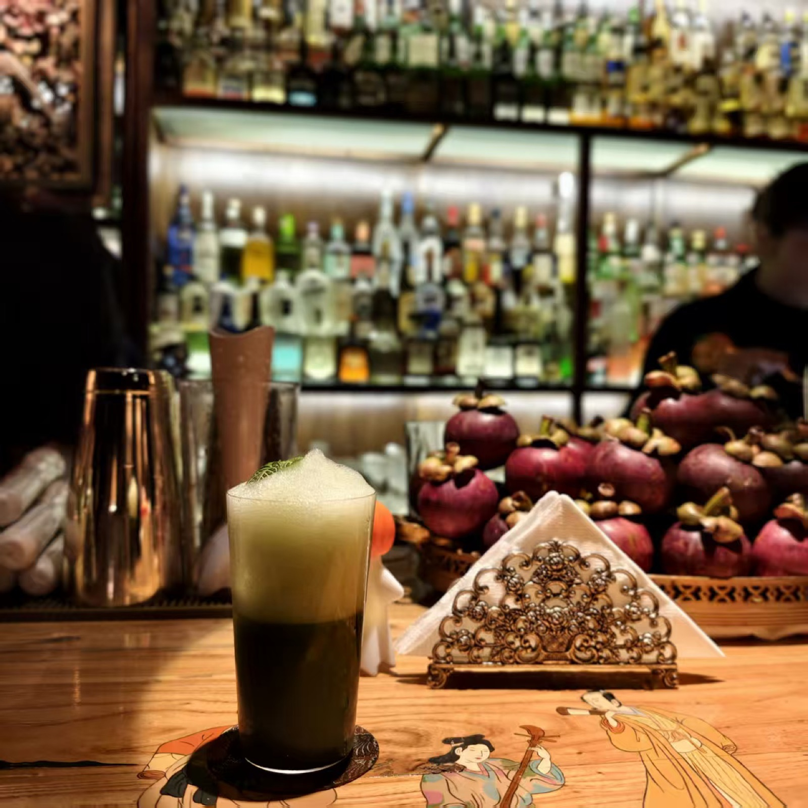
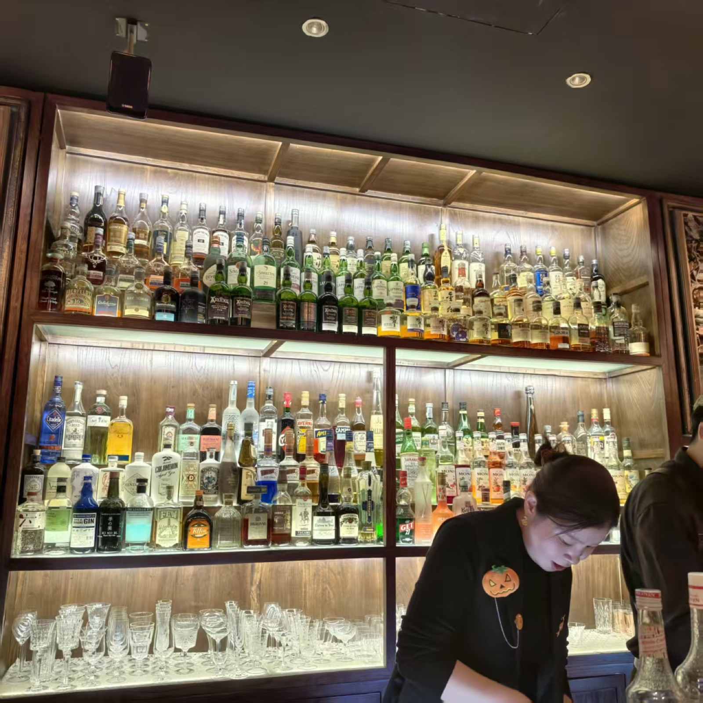

萤 HOTARU
约好了人一起去，到的时候没位子，先在店入口的小座位上等了很久。店很小，等位的地方更小。
先喝的纯饮，接着点了几款店里的鸡尾酒，都没有特别惊艳。最好喝的是一杯抹茶的，名字已经忘了。

店里满墙的酒，氛围不错，来打卡的人不少。

山竹酒是招牌，没喝。酒整体一般。
约好了人一起去，到的时候没位子，先在店入口的小座位上等了很久。店很小，等位的地方更小。
先喝的纯饮，接着点了几款店里的鸡尾酒，都没有特别惊艳。最好喝的是一杯抹茶的，名字已经忘了。

店里满墙的酒，氛围不错，来打卡的人不少。

山竹酒是招牌，没喝。酒整体一般。